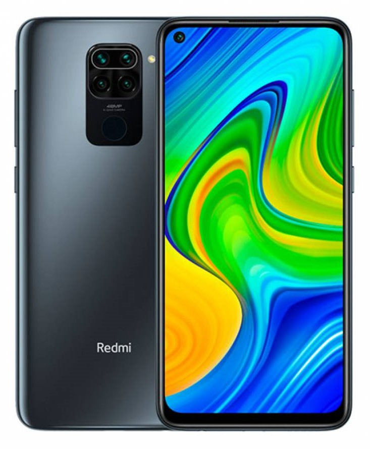

Xiaomi Redmi Note 9 4GB/128GB международная версия с NFC (черный)
Краткое описание товара
Android, экран 6.53" IPS (1080x2340), Mediatek Helio G85, ОЗУ 4 ГБ, флэш-память 128 ГБ, карты памяти, камера 48 Мп, аккумулятор 5020 мАч, 2 SIM
Подробное описание товара
Redmi Note 9 оснащён высокопроизводительным 8-ядерным процессором с максимальной частотой до 2,0 ГГц и графическим ускорителем с частотой 1000 МГц. Аккумулятор ёмкостью 5020 мА·ч (стандартная) обеспечивает превосходную автономность устройства, а благодаря поддержке 18 Вт быстрой зарядки вы сможете быстро зарядить устройство. Поддерживается проводная реверсивная зарядка мощностью до 9 Вт. 48 Мп основная камера со сверхвысоким разрешением позволит запечатлеть незабываемые моменты. 8 Мп сверхширокоугольная камера способна делать чёткие снимки с углом обзора 118°. 2 Мп сенсор глубины позволяет создавать портреты с возможностью регулировать глубину резкости. 2 Мп макро камера поможет в съемке небольших объектов с минимального расстояния. 13 Мп фронтальная камера с ИИ поддерживает съёмку в портретном режиме, запись коротких видео. Используйте устройство для сканирования документов, превращая свой смартфон в лучший инструмент для учёбы и работы.
Характеристики товара
Общая информация |
|
Основные |
|
Процессор |
|
Конструкция |
|
Размеры и вес |
|
Экран |
|
Основная камера |
|
Фронтальная камера |
|
Функции |
|
Датчики |
|
Навигация |
|
Передача данных |
|
Интерфейсы |
|
Аккумулятор и время работы |
|
Комплектация |
|